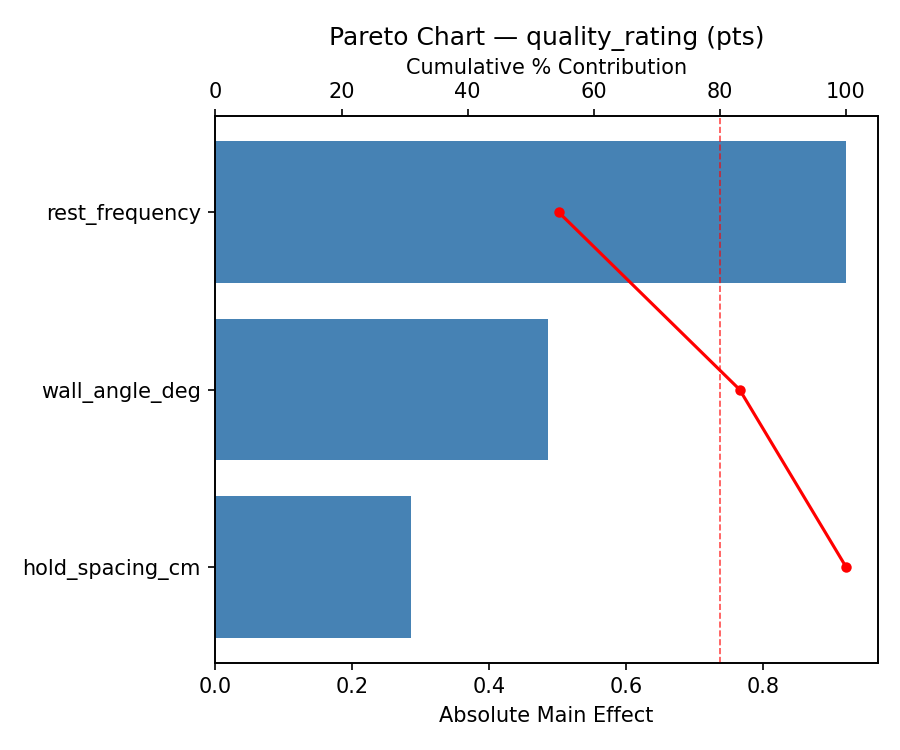
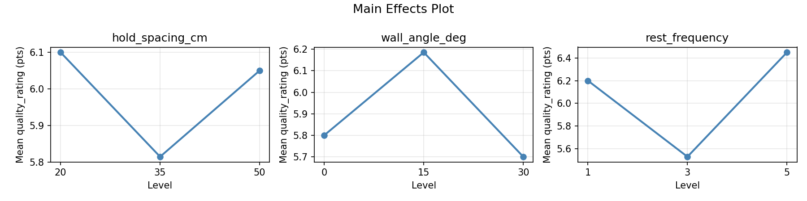
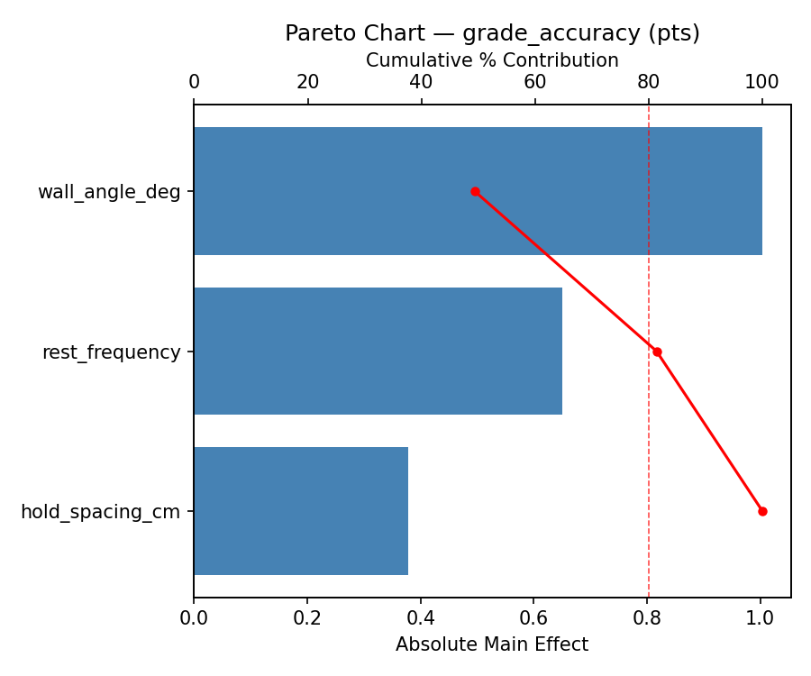
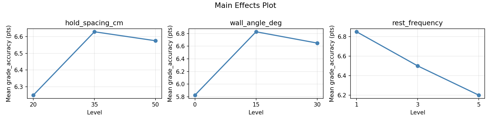
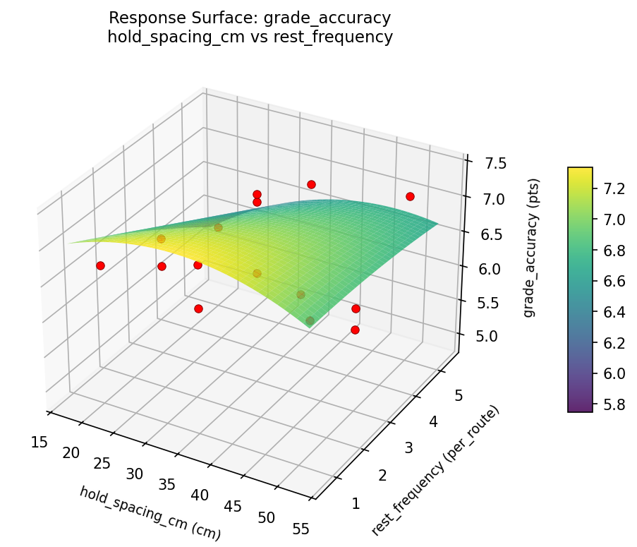
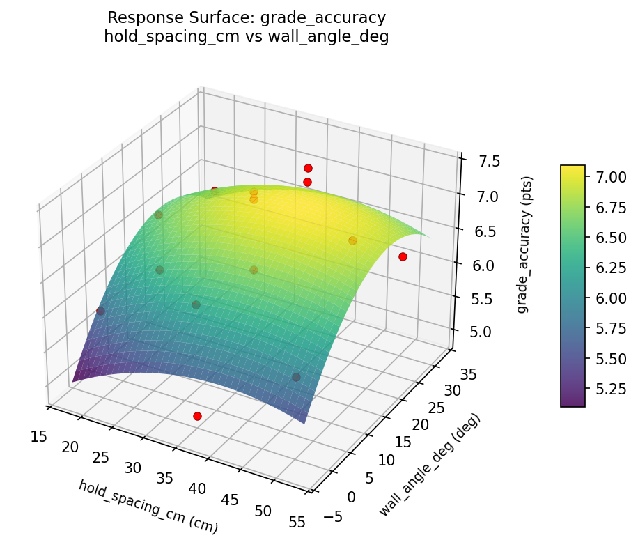
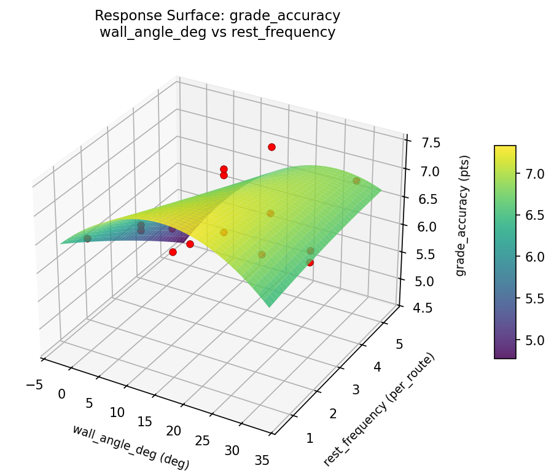
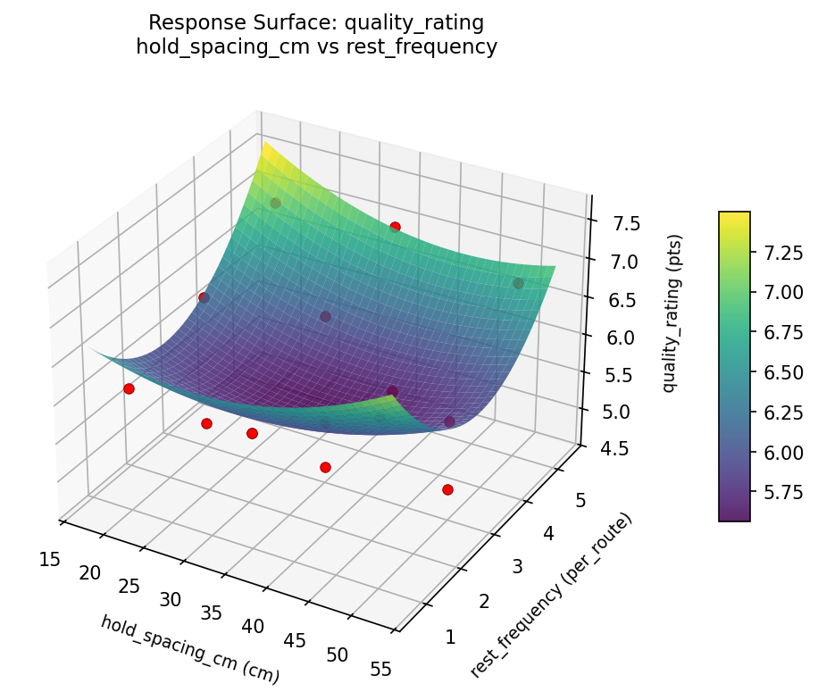
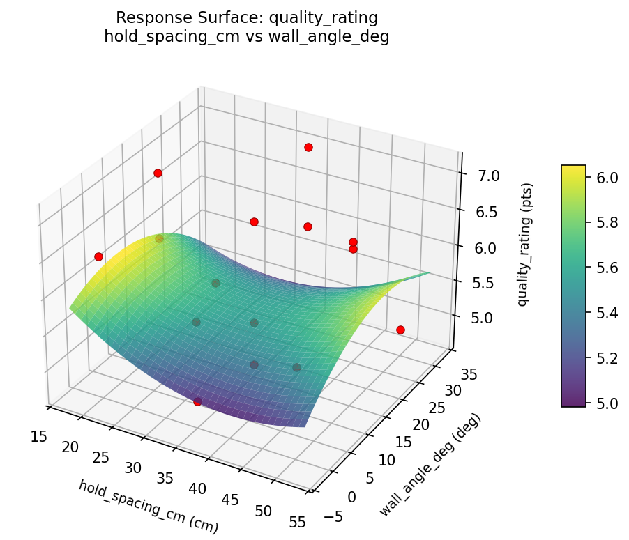
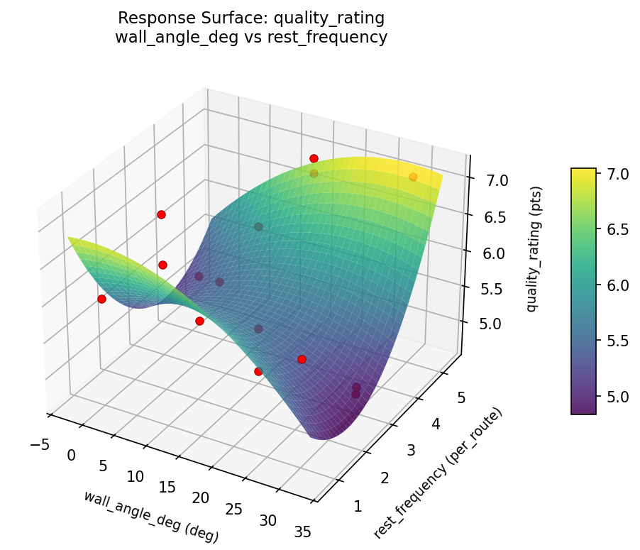

Summary
This experiment investigates indoor climbing route setting. Box-Behnken design to maximize route quality rating and target a specific difficulty grade by tuning hold spacing, wall angle, and rest frequency.
The design varies 3 factors: hold spacing cm (cm), ranging from 20 to 50, wall angle deg (deg), ranging from 0 to 30, and rest frequency (per_route), ranging from 1 to 5. The goal is to optimize 2 responses: quality rating (pts) (maximize) and grade accuracy (pts) (maximize). Fixed conditions held constant across all runs include wall height = 12m, hold set = medium_crimps.
A Box-Behnken design was chosen because it efficiently fits quadratic models with 3 continuous factors while avoiding extreme corner combinations — requiring only 15 runs instead of the 8 needed for a full factorial at two levels.
Quadratic response surface models were fitted to capture potential curvature and factor interactions. The RSM contour plots below visualize how pairs of factors jointly affect each response.
Key Findings
For quality rating, the most influential factors were rest frequency (54.4%), wall angle deg (28.7%), hold spacing cm (16.9%). The best observed value was 7.1 (at hold spacing cm = 35, wall angle deg = 15, rest frequency = 3).
For grade accuracy, the most influential factors were wall angle deg (49.4%), rest frequency (32.0%), hold spacing cm (18.6%). The best observed value was 7.4 (at hold spacing cm = 35, wall angle deg = 0, rest frequency = 1).
Recommended Next Steps
- Run confirmation experiments at the predicted optimal settings to validate the model.
- Consider whether any fixed factors should be varied in a future study.
Experimental Setup
Factors
| Factor | Low | High | Unit |
|---|
hold_spacing_cm | 20 | 50 | cm |
wall_angle_deg | 0 | 30 | deg |
rest_frequency | 1 | 5 | per_route |
Fixed: wall_height = 12m, hold_set = medium_crimps
Responses
| Response | Direction | Unit |
|---|
quality_rating | ↑ maximize | pts |
grade_accuracy | ↑ maximize | pts |
Configuration
{
"metadata": {
"name": "Indoor Climbing Route Setting",
"description": "Box-Behnken design to maximize route quality rating and target a specific difficulty grade by tuning hold spacing, wall angle, and rest frequency"
},
"factors": [
{
"name": "hold_spacing_cm",
"levels": [
"20",
"50"
],
"type": "continuous",
"unit": "cm"
},
{
"name": "wall_angle_deg",
"levels": [
"0",
"30"
],
"type": "continuous",
"unit": "deg"
},
{
"name": "rest_frequency",
"levels": [
"1",
"5"
],
"type": "continuous",
"unit": "per_route"
}
],
"fixed_factors": {
"wall_height": "12m",
"hold_set": "medium_crimps"
},
"responses": [
{
"name": "quality_rating",
"optimize": "maximize",
"unit": "pts"
},
{
"name": "grade_accuracy",
"optimize": "maximize",
"unit": "pts"
}
],
"settings": {
"operation": "box_behnken",
"test_script": "use_cases/215_rock_climbing_route/sim.sh"
}
}
Experimental Matrix
The Box-Behnken Design produces 15 runs. Each row is one experiment with specific factor settings.
| Run | hold_spacing_cm | wall_angle_deg | rest_frequency |
|---|
| 1 | 35 | 0 | 1 |
| 2 | 35 | 15 | 3 |
| 3 | 50 | 15 | 5 |
| 4 | 50 | 15 | 1 |
| 5 | 35 | 15 | 3 |
| 6 | 35 | 15 | 3 |
| 7 | 20 | 15 | 5 |
| 8 | 50 | 0 | 3 |
| 9 | 35 | 0 | 5 |
| 10 | 50 | 30 | 3 |
| 11 | 20 | 15 | 1 |
| 12 | 35 | 30 | 5 |
| 13 | 20 | 0 | 3 |
| 14 | 20 | 30 | 3 |
| 15 | 35 | 30 | 1 |
Step-by-Step Workflow
1
Preview the design
$ python doe.py info --config use_cases/215_rock_climbing_route/config.json
2
Generate the runner script
$ python doe.py generate --config use_cases/215_rock_climbing_route/config.json \
--output use_cases/215_rock_climbing_route/results/run.sh --seed 42
3
Execute the experiments
$ bash use_cases/215_rock_climbing_route/results/run.sh
4
Analyze results
$ python doe.py analyze --config use_cases/215_rock_climbing_route/config.json
5
Get optimization recommendations
$ python doe.py optimize --config use_cases/215_rock_climbing_route/config.json
6
Generate the HTML report
$ python doe.py report --config use_cases/215_rock_climbing_route/config.json \
--output use_cases/215_rock_climbing_route/results/report.html
Features Exercised
| Feature | Value |
|---|
| Design type | box_behnken |
| Factor types | continuous (all 3) |
| Arg style | double-dash |
| Responses | 2 (quality_rating ↑, grade_accuracy ↑) |
| Total runs | 15 |
Analysis Results
Generated from actual experiment runs using the DOE Helper Tool.
Response: quality_rating
Top factors: rest_frequency (54.4%), wall_angle_deg (28.7%), hold_spacing_cm (16.9%).
Pareto Chart

Main Effects Plot

Response: grade_accuracy
Top factors: wall_angle_deg (49.4%), rest_frequency (32.0%), hold_spacing_cm (18.6%).
Pareto Chart

Main Effects Plot

Response Surface Plots
3D surfaces fitted with quadratic RSM. Red dots are observed data points.
grade accuracy hold spacing cm vs rest frequency

grade accuracy hold spacing cm vs wall angle deg

grade accuracy wall angle deg vs rest frequency

quality rating hold spacing cm vs rest frequency

quality rating hold spacing cm vs wall angle deg

quality rating wall angle deg vs rest frequency

Full Analysis Output
RSM surface: rsm_quality_rating_hold_spacing_cm_vs_wall_angle_deg.png
RSM surface: rsm_quality_rating_hold_spacing_cm_vs_rest_frequency.png
RSM surface: rsm_quality_rating_wall_angle_deg_vs_rest_frequency.png
RSM surface: rsm_grade_accuracy_hold_spacing_cm_vs_wall_angle_deg.png
RSM surface: rsm_grade_accuracy_hold_spacing_cm_vs_rest_frequency.png
RSM surface: rsm_grade_accuracy_wall_angle_deg_vs_rest_frequency.png
=== Main Effects: quality_rating ===
Factor Effect Std Error % Contribution
--------------------------------------------------------------
rest_frequency 0.9214 0.2197 54.4%
wall_angle_deg 0.4857 0.2197 28.7%
hold_spacing_cm 0.2857 0.2197 16.9%
=== Summary Statistics: quality_rating ===
hold_spacing_cm:
Level N Mean Std Min Max
------------------------------------------------------------
20 4 6.1000 0.9416 4.8000 7.0000
35 7 5.8143 0.8989 4.7000 7.1000
50 4 6.0500 0.8888 4.9000 6.8000
wall_angle_deg:
Level N Mean Std Min Max
------------------------------------------------------------
0 4 5.8000 0.6683 4.9000 6.5000
15 7 6.1857 0.8726 4.7000 7.0000
30 4 5.7000 1.0801 4.8000 7.1000
rest_frequency:
Level N Mean Std Min Max
------------------------------------------------------------
1 4 6.2000 0.3367 6.0000 6.7000
3 7 5.5286 0.8220 4.7000 6.7000
5 4 6.4500 1.0408 4.9000 7.1000
=== Main Effects: grade_accuracy ===
Factor Effect Std Error % Contribution
--------------------------------------------------------------
wall_angle_deg 1.0036 0.1745 49.4%
rest_frequency 0.6500 0.1745 32.0%
hold_spacing_cm 0.3786 0.1745 18.6%
=== Summary Statistics: grade_accuracy ===
hold_spacing_cm:
Level N Mean Std Min Max
------------------------------------------------------------
20 4 6.2500 0.3697 5.9000 6.7000
35 7 6.6286 0.8616 4.9000 7.4000
50 4 6.5750 0.6185 5.9000 7.1000
wall_angle_deg:
Level N Mean Std Min Max
------------------------------------------------------------
0 4 5.8250 0.6702 4.9000 6.5000
15 7 6.8286 0.5559 5.9000 7.4000
30 4 6.6500 0.4203 6.2000 7.1000
rest_frequency:
Level N Mean Std Min Max
------------------------------------------------------------
1 4 6.8500 0.3000 6.5000 7.1000
3 7 6.5000 0.6055 5.9000 7.4000
5 4 6.2000 1.0132 4.9000 7.1000
Pareto chart (quality_rating): use_cases/215_rock_climbing_route/results/analysis/pareto_quality_rating.png
Pareto chart (grade_accuracy): use_cases/215_rock_climbing_route/results/analysis/pareto_grade_accuracy.png
Main effects (quality_rating): use_cases/215_rock_climbing_route/results/analysis/main_effects_quality_rating.png
Main effects (grade_accuracy): use_cases/215_rock_climbing_route/results/analysis/main_effects_grade_accuracy.png
Optimization Recommendations
=== Optimization: quality_rating ===
Direction: maximize
Best observed run: #12
hold_spacing_cm = 35
wall_angle_deg = 15
rest_frequency = 3
Value: 7.1
RSM Model (linear, R² = 0.1250, Adj R² = -0.1136):
Coefficients:
intercept +5.9533
hold_spacing_cm +0.0875
wall_angle_deg +0.3250
rest_frequency +0.2125
RSM Model (quadratic, R² = 0.2676, Adj R² = -1.0506):
Coefficients:
intercept +6.1333
hold_spacing_cm +0.0875
wall_angle_deg +0.3250
rest_frequency +0.2125
hold_spacing_cm*wall_angle_deg -0.3000
hold_spacing_cm*rest_frequency -0.4750
wall_angle_deg*rest_frequency -0.1000
hold_spacing_cm^2 -0.0542
wall_angle_deg^2 -0.1292
rest_frequency^2 -0.1542
Curvature analysis:
rest_frequency coef=-0.1542 concave (has a maximum)
wall_angle_deg coef=-0.1292 concave (has a maximum)
hold_spacing_cm coef=-0.0542 negligible curvature
Notable interactions:
hold_spacing_cm*rest_frequency coef=-0.4750 (antagonistic)
hold_spacing_cm*wall_angle_deg coef=-0.3000 (antagonistic)
Predicted optimum (from linear model):
hold_spacing_cm = 35
wall_angle_deg = 30
rest_frequency = 5
Predicted value: 6.4908
Model quality: Weak fit — consider adding center points or using a different design.
Factor importance:
1. wall_angle_deg (effect: 0.6, contribution: 52.0%)
2. rest_frequency (effect: 0.4, contribution: 34.0%)
3. hold_spacing_cm (effect: 0.2, contribution: 14.0%)
=== Optimization: grade_accuracy ===
Direction: maximize
Best observed run: #11
hold_spacing_cm = 35
wall_angle_deg = 0
rest_frequency = 1
Value: 7.4
RSM Model (linear, R² = 0.2947, Adj R² = 0.1023):
Coefficients:
intercept +6.5133
hold_spacing_cm +0.2250
wall_angle_deg -0.3500
rest_frequency +0.2500
RSM Model (quadratic, R² = 0.8012, Adj R² = 0.4434):
Coefficients:
intercept +6.4333
hold_spacing_cm +0.2250
wall_angle_deg -0.3500
rest_frequency +0.2500
hold_spacing_cm*wall_angle_deg +0.0500
hold_spacing_cm*rest_frequency -0.6000
wall_angle_deg*rest_frequency +0.6000
hold_spacing_cm^2 -0.0667
wall_angle_deg^2 +0.2833
rest_frequency^2 -0.0667
Curvature analysis:
wall_angle_deg coef=+0.2833 convex (has a minimum)
hold_spacing_cm coef=-0.0667 negligible curvature
rest_frequency coef=-0.0667 negligible curvature
Notable interactions:
wall_angle_deg*rest_frequency coef=+0.6000 (synergistic)
hold_spacing_cm*rest_frequency coef=-0.6000 (antagonistic)
Predicted optimum (from quadratic model):
hold_spacing_cm = 35
wall_angle_deg = 0
rest_frequency = 1
Predicted value: 7.3500
Model quality: Good fit — general trends are captured, some noise remains.
Factor importance:
1. wall_angle_deg (effect: 0.7, contribution: 42.4%)
2. rest_frequency (effect: 0.5, contribution: 30.3%)
3. hold_spacing_cm (effect: 0.5, contribution: 27.3%)